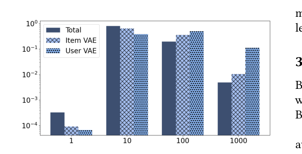

[CIKM 2022][去偏公平] 将 VAE-CF 转置为物品视角并按流行度分组训练、加组间重建公平正则, 配合配额式列表拼装与 BPRMF 兜底, 用 MRED 与行为测试换取长尾曝光公平。
标签：CIKM 2022 (EvalRS DataChallenge) · 去偏公平 · 召回 + 列表级配额重排 · Item-based VAE · 流行度偏差 MRED
CIKM 2022 (EvalRS DataChallenge)
去偏公平
召回 + 列表级配额重排
Item-based VAE
流行度偏差 MRED
Item-based Variational Auto-encoder for Fair Music Recommendation (基于物品变分自编码器的公平音乐推荐)
会议/期刊 : CIKM 2022 — EvalRS DataChallenge Workshop (CEUR Workshop Proceedings)作者与机构 : Jinhyeok Park, Dain Kim, Dongwoo Kim (POSTECH)推荐链路定位 : 召回 (全库矩阵补全) + 列表级配额重排 (top-100 列表构造)研究方向 : 去偏公平 / 协同过滤论文原文 : 论文原文链接 开源代码 : 开源代码仓库链接
TL;DR (1分钟核心速览)
EvalRS DataChallenge 要求同时优化准确率、5 组 MRED 公平性与行为测试 (be less wrong / latent diversity), 而单一 user-based VAE 与 BPRMF 都会把曝光压向头部曲目。本文把 VAE-CF 的输入矩阵转置为物品视角, 按艺术家/曲目流行度分组各训一个 VAE, 叠加“组重建损失 vs 全局重建损失”的公平正则, 再用配额式列表拼装 + BPRMF top-1 兜底。LFM-1b 的 Leave-One-Out 四折上, Phase2 综合分 1.553 vs 官方 CBOW 基线 −1.212, 艺术家/曲目流行度 MRED 幅度分别下降 86%/79%, 但 HR 由 0.0363 降至 0.0161。
Background & Motivation (背景与核心矛盾)
主流范式 : 音乐推荐以 VAE-CF (多项似然重建用户交互向量) 与 BPRMF (成对排序) 为主, 训练目标几乎只优化 HR/MRR。前人局限 : ① 纯效用优化放大 Matthew effect: user-based VAE 把交互集中在头部曲目, 播放量 <10 的最冷门组几乎无法被推荐; ② 组间公平在评测侧按 MRED 计算 (性别/国家/用户活跃度/艺术家流行度/曲目流行度五组), 而 accuracy 与 MRED 常常此消彼长, 单一模型无法同时占优。核心洞察 (Key Insight) : 物品向量 \(\mathbf{x}_i\) 跨全体用户共享, 其多项似然天然平滑了“少数用户才能触达长尾”的稀疏性; 同时把最冷门组单独建模并强制配额, 可在不改变模型表征的前提下直接改写曝光分布。本文切入点 : 以 item-based VAE 为主干 + 分组独立训练 + 公平正则 + 列表级配额, 让公平性由“模型 + 组配额”共同保证。
Method (核心方法设计)
1. 整体框架 (Overall Architecture)
把交互矩阵转置后用物品向量 \(\mathbf{x}_i\in\{0,1\}^{U}\) 输入 VAE, 得到全库补全概率并据此对每用户排序; 同时按艺术家流行度 4 组、曲目流行度 4 组分别训练独立 VAE (最冷门组各多训 2 epoch, 隐维下调至 15), 并把四支模型的排序结果按 38/20/20/20 比例抽 98 项、以 5/5/5/5 交错排列前 20 项, 再补 1 条最冷门曲目, 最后把 BPRMF 的 top-1 放到首位构成 100 项列表。
flowchart TD
A["用户-物品交互矩阵 X → 转置为物品向量 x_i"] --> B["按艺术家/曲目流行度分 4 组，每组独立 Item-VAE (β-KL + γ·公平正则)"]
B --> C["组内概率补全 → 98 项配额拼装 (38/20/20/20)"]
D["BPRMF (pairwise ranking)"] --> E["BPRMF top-1 置首 + 1 条最冷门曲目"]
C --> E
E --> F["100 项推荐列表 (be less wrong / latent diversity 达标)"]2. 关键设计拆解 (Key Designs)
Item-based VAE (把 CF-VAE 转置, 换取长尾曝光) ：user-based 输入下每行仅少数非零, 长尾物品难以获得梯度; 改用物品向量后 ELBO 变为
\(\mathcal{L}_{\beta}(\mathbf{x}_i;\theta,\phi)=\mathbb{E}_{q_\phi(\mathbf{z}_i|\mathbf{x}_i)}[\log p_\theta(\mathbf{x}_i|\mathbf{z}_i)]-\beta\,\mathrm{KL}\!\left(q_\phi(\mathbf{z}_i|\mathbf{x}_i)\|p(\mathbf{z}_i)\right)\) ,
其中似然为多项分布, 且共享一份物品隐空间使头部/长尾物品的曝光概率被同一尺度校准, 从而推荐分布贴近全体曲目分布 (图 1)。

图1：所有物品与通过模型推荐物品的流行度分布。x轴表示曲目流行度分组，y轴表示各分组比例。由于分布偏斜，y轴采用对数刻度。结果表明，item-VAE 推荐的物品与所有物品的总体流行度分布相似。
流行度分组独立训练 + 配额式列表拼装 (把公平写进候选集) ：单模型无法同时满足 4 个流行度组的 miss rate 均衡, 因此分组各自训练并从各组按固定条数取候选, 使组配额成为硬约束而非软激励; 最冷门组额外 2 epoch 解决欠拟合, 交错(5/5/5/5)而非集中排列可避免组内簇聚伤害 latent diversity。公平正则与训练/推理开销 ：在组重建损失与全局重建损失间加绝对差惩罚
\(F_\phi=\mathbb{E}\!\left[\left|\frac{1}{|G_j|}\sum_{c\in G_j}\mathbb{E}[\log p_\theta(\mathbf{x}_c|\mathbf{z}_c)]-\frac{1}{|\mathcal{I}|}\sum_{i\in\mathcal{I}}\mathbb{E}[\log p_\theta(\mathbf{x}_i|\mathbf{z}_i)]\right|\right]\) ,
最终目标 \(\mathcal{L}^{R}_{\beta}=\mathcal{L}_{\beta}-\gamma F_\phi\) (\(\gamma=0.003\) ,\(\beta=10^{-4}\) ), 隐维 Phase1 为 500/隐层 300、Phase2 调至 17, batch 32, Adam\(10^{-3}\) 训 2 epoch; BPRMF 隐维 200、batch 8192, 以免负采样 (全库补全) 推理, 总开销为 4+1 个 VAE 前向, 单机 CPU 可跑。
Experimental Setup & Evaluation Protocol (实验设置与评估协议)
数据集
#Users
#Items
#Interactions
稀疏度/密度
特征/场景说明
LFM-1b
119,555
820,998
37,926,429
~3.8e-4
音乐收听日志; 含性别/国籍人口属性与艺术家、曲目元数据
数据划分与防穿越 : Leave-One-Out — 每用户历史随机遮蔽 1 条为测试正例, 评测侧公开 4 折 (Fold1–4)。排名评测协议 : 官方 EvalRS 脚本对提交的 top-100 列表打分 (列表级全库排序, 不做负采样近似), 指标为 HR、MRR、5 组 MRED (性别/国家/用户活跃度/艺术家流行度/曲目流行度)、be less wrong (GT 与 top-1 表征距离)、latent diversity。对比基线与超参 : 官方提供 CBOWRecSysBaseline + 自建 user-based VAE、BPRMF 骨干对照; Phase1 九指标简单平均, Phase2 按 Phase1 难度重加权; 未报告显著性检验。
Key Experimental Results (实验关键数据)
1. 主实验对比 (Phase 1 骨干 / Phase 2 终版)
模型 (Phase 1, 九指标均值)
HR↑
MRR↑
User MRED↓
TrackPop MRED↓
ArtistPop MRED↓
Be less wrong↓
Latent Div.↑
Score↑
VAE (item) 0.2121 0.0399 −0.0287
−0.0529
−0.0216
0.3189 −0.3041 0.0138
VAE (user)
0.1593
0.0256
−0.0323
−0.0937
−0.0430
0.3512
−0.2726
0.0082
BPRMF
0.0372
0.0025
−0.0163 −0.0230 −0.0102 0.3721
−0.2948
0.0056
Improv. (item vs user)
+33.2%
+55.9%
—
43.6%↓偏差
49.8%↓偏差
9.2%↓
+11.6%
+68.3%
模型 (Phase 2, 4 折均值)
HR↑
MRR↑
Country↓
User↓
TrackPop↓
ArtistPop↓
Gender↓
Be less wrong↓
Latent Div.↑
Score↑
Ours (item-VAE 组集 + BPRMF) 0.0161
0.0017
−0.0037 −0.0029 −0.0023 −0.0010 −0.0007 0.3639 −0.2964 1.553
CBOWRecSysBaseline
0.0363 0.0037 −0.0090
−0.0224
−0.0111
−0.0072
−0.0061
0.3758
−0.3080
−1.212
Improv.
−55.6%
−54.1%
59%↓
87%↓
79%↓
86%↓
89%↓
3.2%↓
+3.8%
+2.765(绝对)
2. 消融实验 (组件级替换对照, 原文 Table 2 / Table 4)
模型
MR@轨流1↑
MR@10↑
MR@100↑
MR@1000↑
TrackPop MRED↓
CV-HR↓
VAE (item)
0.8946
0.7865
0.7770
0.8803
−0.0529
0.2559
VAE (user)
0.9398
0.8861
0.8063
0.6448
−0.0937
0.7022
BPRMF
0.9965
0.9831
0.9387
0.9487
−0.0230
0.6436
VAE (final) 0.9858 0.9851 0.9821 0.9867 −0.0023 0.0701
3. 关键实验发现 (Key Findings)
“物品视角”本身就是最强去偏算子 : 同一 VAE 架构下, item 化把 HR 从 0.1593 拉到 0.2121 (+33.2%) 的同时将 TrackPop MRED 偏差收窄 43.6%, 即长尾准确率 (MR 0.8946 vs 0.9398) 与头部准确率 (0.8803 vs 0.6448 变差) 发生置换而不是整体退化, 说明公平收益来自 \(p_\theta(\mathbf{x}_i|\mathbf{z}_i)\) 的跨用户共享先验, 而非牺牲全部效用。MRED 的巨额下降主要来自列表配额而非表征学习 : 最终模型 TrackPop/ArtistPop MRED 仅剩 −0.0023/−0.0010 (为纯 item-VAE 的 4%/5%), 但 HR 同步跌至 0.0161, 表明 38/20/20/20 的硬配额是把 miss rate“拉平”的主因, 属于评测对齐式的后处理收益。尺度无关度量会推翻模型排序 : 按作者提出的 CV-HR, VAE(final) 在艺术家组 MR 极均衡 (0.9831–0.9848) 却因 HR 过低取得 CV=0.1459, 反而差于 VAE(item) 的 0.1019 (HR 0.2121) — 证明 MRED 只惩罚绝对偏差会奖励“低准确率的均贫”模型, 必须用相对比值校正。
Highlights & Limitations (亮点、对比与审稿批判)
与代表作对比 : vs. Liang et al. (Mult-VAE, 用户视角多项似然) 本文只做矩阵转置与分组重训, 改动极小却直接改变曝光分布; vs. F2VAE (只在用户侧加公平正则) 本文把正则作用到物品流行度组并与硬配额互补; vs. BPRMF 本文不追求其 pairwise 精度, 仅借其 top-1 的语义邻近性 (be less wrong) 做兜底集成。可迁移亮点 : ① 分组独立建模 + 组配额交错的列表拼装, 可直接用于多场景/长尾扶持的候选融合; ② CV-HR 式“偏差/均值”归一化公平度量, 适用于任何量纲敏感的组公平对比。审稿级局限批判 : ① 指标工程风险 : 综合分从 −1.212 跃至 1.553 依赖 Phase2 的难度重加权与固定 100 项列表的组配额, 而 HR 腰斩 (−55.6%), 缺少同预算、同列表长度的基线对照, 难以判定是“更公平”还是“更贴指标”; ② 消融与显著性缺失 : 公平正则 (\(\gamma=0.003\) )、分组数 4、隐维 17/15 均手搜, 从未拆开单独验证\(F_\phi\) 的贡献, 也未报告 4 折方差或\(p\) 值, 复现结论的置信度偏弱。
Rating (四维评分)
方法创新性 (Novelty) : ⭐⭐⭐ （组件均为已有模块的重新组合, 但“转置 + 分组 + 配额”的组合洞察扎实, 并额外提出 CV-HR 度量）评估协议与实验扎实度 (Protocol & Experiments) : ⭐⭐⭐ （官方 4 折 + 5 组 MRED + 行为测试较全面, 但仅对比 CBOW 基线, 无真消融与显著性检验）写作与数学规范度 (Clarity & Rigor) : ⭐⭐⭐ （ELBO 与正则式书写清晰, 但流行度分组标签 1/10/100/1000 语义含糊, 变量符号在正文与表格间不统一）工业落地与复现价值 (Industrial & Practical Value) : ⭐⭐⭐ （代码已开源、纯 CF 无额外特征易复现, 但 4+1 个 VAE 分组重训与配额规则使线上维护成本偏高）